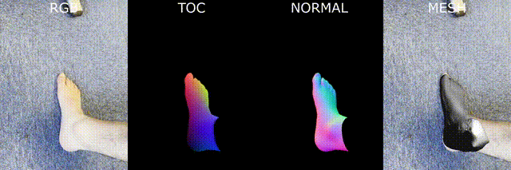

*FOCUS-SfM only.
We extend the synthetic dataset SynFoot to SynFoot2, including more diversity, articulated feet, and dense correspondences..
These were created using our custom library BlenderSynth, and are available for download.
We train a network to predict dense correspondences, surface normals, and related uncertainties.
See our predictions on in-the-wild images below.
We introduce 2 methods to fit to our dense correspondences:
FOCUS-SfM: Collect correspondences across views, triangulate, and run Poisson reconstruction to recover a surface.
FOCUS-O: Fit the parameterized FIND model directly to the dense correspondences.
Our methods produce better surface normal reconstructions than COLMAP, evaluated on the Foot3D benchmark foot reconstruction dataset.
Our methods require as few as 3 views, whereas COLMAP needs 15+.
Thanks to our dense correspondences, we can reconstruct from a completely uncalibrated imageset - even when backgrounds are untextured and typical camera calibration would fail. Try our demo on Github.
We acknowledge the collaboration and financial support of Trya Srl.
@inproceedings{boyne2025focus,
title={FOCUS: Multi-View Foot Reconstruction from Synthetically Trained Dense Correspondences},
author={Boyne, Oliver and Cipolla, Roberto},
booktitle={2025 International Conference on 3D Vision (3DV)},
year={2025}
}